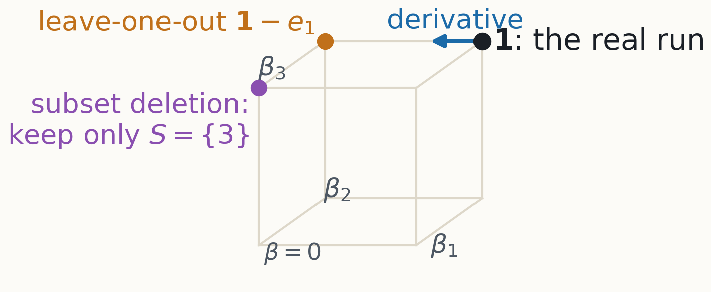
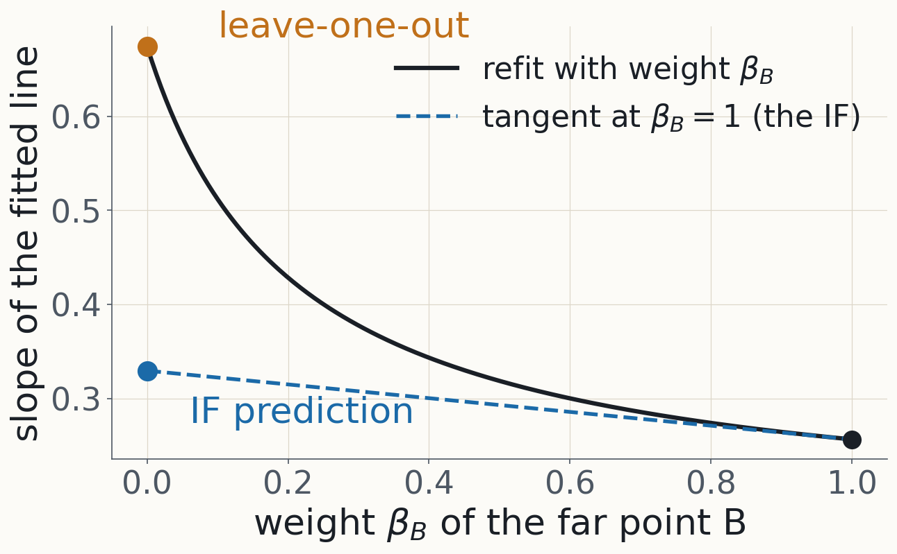
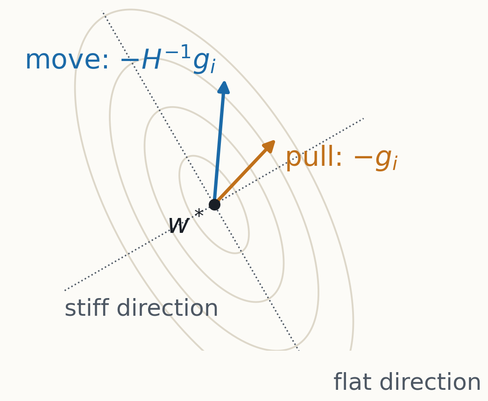
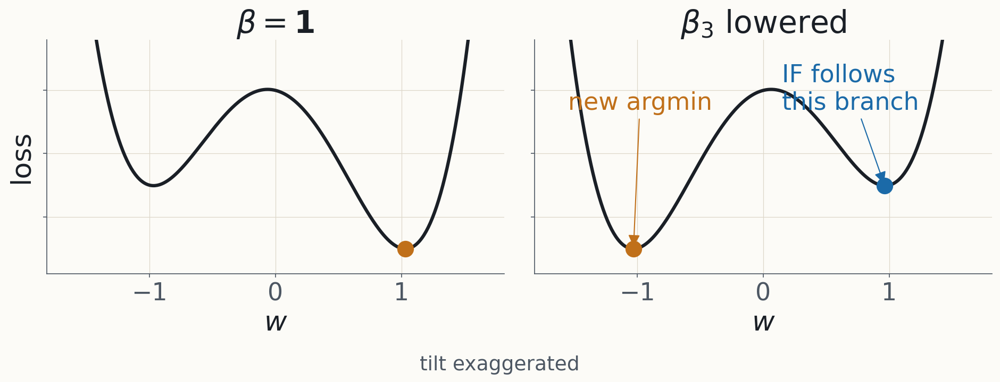
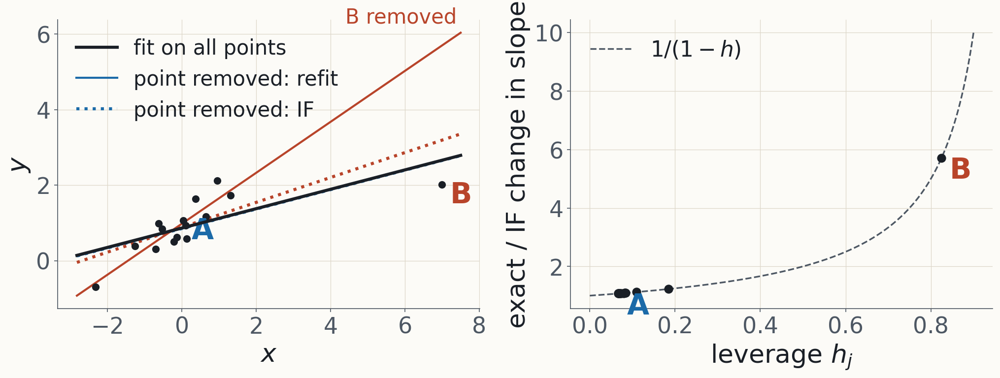
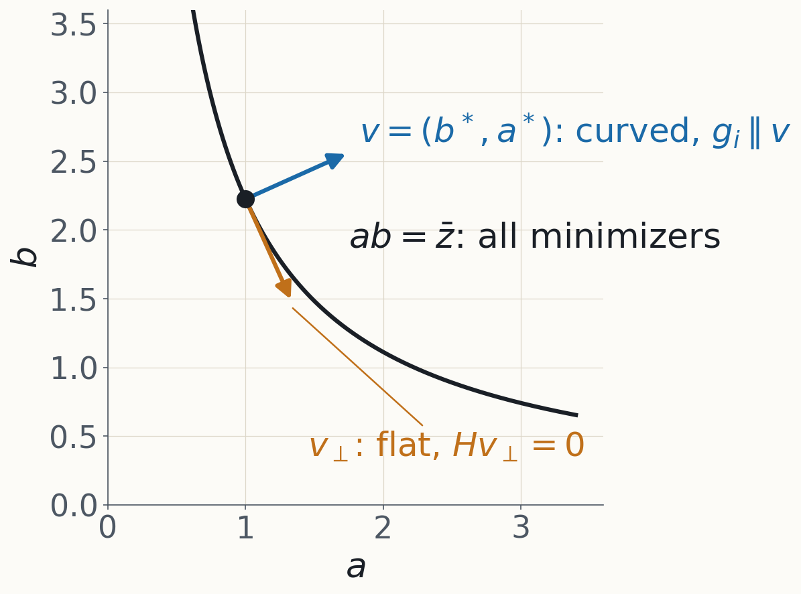
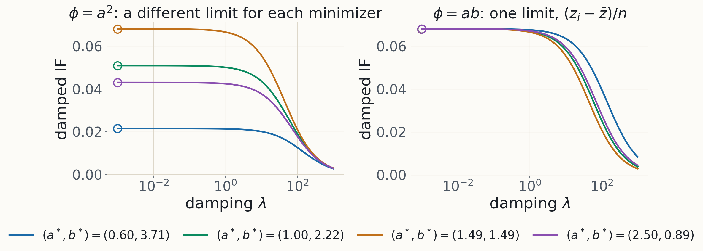
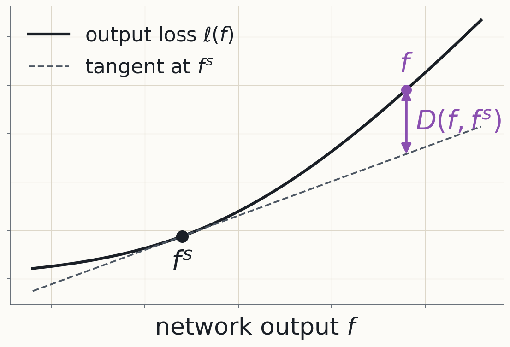
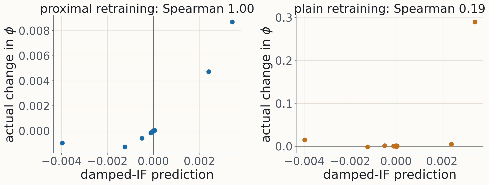
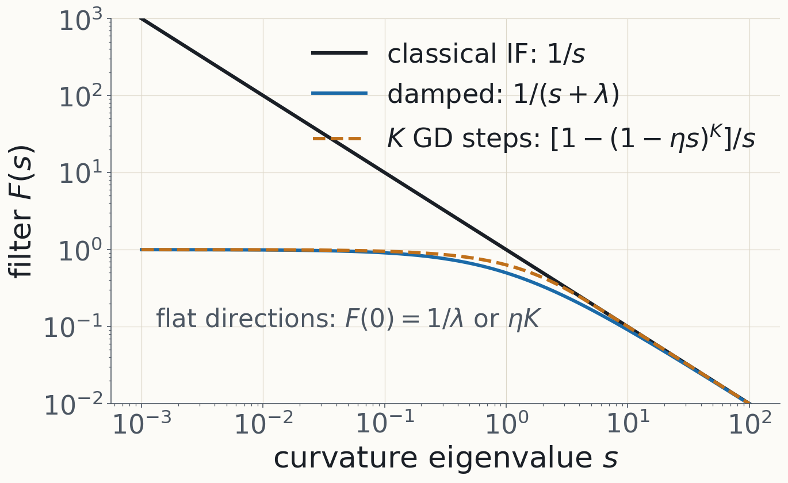

Data attribution · Lecture 1
What did this training example do?
From a causal question to one formula, and what that formula actually answers
The question
Which training examples made the model do this?
An example
Which pretraining texts make this response likely?
Query: a dialogue in which an AI assistant says it does not consent to being shut down.
810M model: top sequences
Share words with the query ("continue", "existing"), but not its meaning.
52B model: top sequences
Are about wanting to keep existing: an AI pleading with its crew; a person surviving in a desert.
The framing
Causal analysis of a training run
interpretability
input
→
layers
→
output
data attribution
training data
→
optimizer steps
→
weights
→
behaviour
Ablating a layer costs a forward pass. Ablating an example costs a training run.
The plan
One question, one formula, and what it answers
1 · Counterfactuals are subtle
2 · Data weights make deletion differentiable
3 · Derive the influence function; test it on regression
4 · What breaks for networks, and what the fixes answer
5 · How to check an attribution
6 · Another $\pi$: the training run, and a map of the afternoon
§1 · Counterfactuals
"Example $i$ caused it if deleting $i$ and retraining changes it."
What could go wrong?
§1 · Overdetermination
Two causes, each sufficient
| butter | yeast | croissants |
|---|
| premium | premium | fluffy |
| standard | premium | fluffy |
| premium | standard | fluffy |
| standard | standard | flat |
Leave-one-out credits neither. In training: a behaviour taught by many redundant examples.
§1 · Shapley values
Average over every subset the example could join
$$\varphi_i=\mathbb E_{\text{random order}}\big[v(S\cup\{i\})-v(S)\big],\quad S=\text{examples before }i$$
Croissants: butter $\tfrac12$, yeast $\tfrac12$. The price: each $v(S)$ is a retraining, for up to $2^{n-1}$ subsets.
§1 · Takeaway
"The influence of example $i$" is ambiguous until you say which counterfactual.
§2 · The formalism
How do you make "delete example $i$" something you can differentiate?
§2 · Data weights
Give every example a weight
$$L(w;\beta)=\sum_{i=1}^n\beta_i\,L_i(w)$$
$\beta=\mathbf 1$ is the real run; $\beta_i:1\to0$ deletes example $i$.
§2 · The object of study
Weights → trained model → behaviour
$$\beta\;\xrightarrow{\ \ \pi\ \ }\;\pi(\beta)\;\xrightarrow{\ \ \phi\ \ }\;\phi\big(\pi(\beta)\big)$$
$\pi$, "the trained model", is a modelling choice. $\phi$ is the behaviour: a test loss, a logit.
§2 · Influence
The influence of example $i$ on $\phi$
$$\mathcal I_i=\frac{\partial\,\phi(\pi(\beta))}{\partial\beta_i}\bigg|_{\beta=\mathbf 1}$$
Deleting $i$ changes $\phi$ by about $-\mathcal I_i$. On a test loss, a helpful example has $\mathcal I_i<0$.
§2 · Three targets
Three questions, at three distances from the real run

The derivative; leave-one-out; deleting a large random subset.
§2 · A puzzle for later
The derivative and the deletion can disagree

One point of a 15-point regression: the tangent predicts a change 5.7× too small.
§2 · Takeaway
Influence is the derivative of a behaviour in one example's weight, through a chosen $\pi$.
§3 · The classical influence function
If training lands at a minimum, where does the minimum go when you reweight one example?
§3 · Warm-up
The influence of a point on a mean
$$\begin{aligned}
L(\mu;\beta)&=\tfrac12\textstyle\sum_j\beta_j(z_j-\mu)^2\\[4pt]
\htmlClass{fragment}{\mu(\beta)}&\htmlClass{fragment}{=\frac{\sum_j\beta_jz_j}{\sum_j\beta_j}}\\[4pt]
\htmlClass{fragment}{\frac{\partial\mu}{\partial\beta_i}\Big|_{\mathbf 1}}&\htmlClass{fragment}{=\frac{z_i-\bar z}{n}}
\end{aligned}$$
A point's pull on the mean is its distance from the mean, over $n$.
§3 · The general case
The trained model is defined by an equation
$$\nabla_wL\big(w^*(\beta);\beta\big)=0\quad\text{for all }\beta\text{ near }\mathbf 1$$
Implicit function theorem: if $H=\nabla^2_wL$ is invertible at $w^*$, this defines a smooth $w^*(\beta)$.
So differentiate the equation, not the training algorithm.
§3 · Differentiate in $\beta_i$
Two places $\beta_i$ enters
$$\nabla_wL(w;\beta)=\textstyle\sum_j\beta_j\nabla L_j(w)$$
$$\underbrace{\nabla^2_wL\;\frac{\partial w^*}{\partial\beta_i}}_{\text{through }w^*}\;+\;\htmlClass{fragment}{\underbrace{\nabla L_i(w^*)}_{\text{explicitly}}}\;=\;0$$
At $\beta=\mathbf 1$: $H=\nabla^2_wL(w^*;\mathbf 1)$ is the Hessian, $g_i=\nabla L_i(w^*)$ is $i$'s gradient.
§3 · Solve
The influence function
$$\frac{\partial w^*}{\partial\beta_i}=-H^{-1}g_i\qquad\htmlClass{fragment}{\boxed{\;\mathcal I_i=-\,g_\phi^\top H^{-1}g_i\;}}$$
$g_\phi=\nabla\phi(w^*)$; the chain rule through $\phi$. Needs $H$ invertible.
§3 · Check
It recovers the warm-up
$$H=n,\quad g_i=-(z_i-\bar z)\quad\Longrightarrow\quad -H^{-1}g_i=\frac{z_i-\bar z}{n}$$
For the mean, $L_i=\tfrac12(z_i-\mu)^2$.
§3 · Read it right to left
$H^{-1}$ turns a pull into a move

Flat directions move most. Then $g_\phi$ reads off what $\phi$ cares about.
§3 · What the theorem gives
A local branch, not "the retrained model"

The IF follows the nearby minimum; retraining from scratch may land in another basin.
§3 · Takeaway
One linear solve per query: $\mathcal I_i=-g_\phi^\top H^{-1}g_i$.
§3 · How good is it?
How well does a derivative predict deleting a whole example?
§3 · Least squares
Everything is explicit
$$L_j=\tfrac12(y_j-w^\top x_j)^2,\qquad A=\sum_jx_jx_j^\top$$
$$\htmlClass{fragment}{H=A,\qquad g_j=-x_j\,r_j,\qquad r_j=y_j-x_j^\top w^*}$$
The IF says deleting $j$ moves the fit by $-A^{-1}x_j\,r_j$.
§3 · Exact deletion, step 1
Subtract the two sets of normal equations
$$\begin{aligned}
\text{all data:}&\quad A\,w^*=\textstyle\sum_ix_iy_i\\[4pt]
\htmlClass{fragment}{\text{without }j\text{:}}&\quad\htmlClass{fragment}{(A-x_jx_j^\top)(w^*+\delta)=\textstyle\sum_ix_iy_i-x_jy_j}\\[4pt]
\htmlClass{fragment}{\text{subtract:}}&\quad\htmlClass{fragment}{A\,\delta=x_j\,\big(\underbrace{x_j^\top\delta-r_j}_{=:\,c}\big)}
\end{aligned}$$
$\delta=w^*_{(-j)}-w^*$ is the exact change. So $\delta=c\,A^{-1}x_j$: only the size $c$ is unknown.
§3 · Exact deletion, step 2
Find the size from its own definition
$$\begin{aligned}
x_j^\top\delta&=c\;\underbrace{x_j^\top A^{-1}x_j}_{h_j}\\[4pt]
\htmlClass{fragment}{c}&\htmlClass{fragment}{=h_j\,c-r_j\quad\Longrightarrow\quad c=-\frac{r_j}{1-h_j}}
\end{aligned}$$
$h_j$ is the leverage of example $j$.
§3 · The result
Exact deletion is the IF, magnified
$$w^*_{(-j)}-w^*=-\frac{A^{-1}x_j\,r_j}{1-h_j}$$
$$\frac1{1-h_j}=\underbrace{1}_{\text{IF}}+\,h_j+h_j^2+\cdots$$
§3 · Leverage
How far a point sticks out, in the data's own metric
$$h_j=x_j^\top A^{-1}x_j\in[0,1],\qquad\sum_jh_j=p$$
$p$: the number of parameters. At $h_j=1$ the point alone pins down a direction.
§3 · The puzzle, solved
Low leverage: close. High leverage: far too small.

Point B has leverage $h=0.825$, so $1/(1-h)=5.7$: the puzzle from slide 15.
§3 · Takeaway
The IF is least reliable for exactly the points you most want to ask about. And this model is convex and converged.
§4 · Neural networks
At a network checkpoint, which assumptions survive?
- $H$ invertible? No: flat directions.
- $H$ positive? No: negative curvature.
- $\nabla L=0$? No: training stopped early.
§4 · Fix 1 · Flat directions
Symmetries make valleys of minimizers

A toy: predict $ab$, losses $L_i=\tfrac12(z_i-ab)^2$. Along the valley, $H$ has a zero eigenvalue.
§4 · Fix 1 · Damping
Damping is exact for a proximal question
$$L(w;\beta)+\frac\lambda2\|w-w^*\|^2\quad\htmlClass{fragment}{\xrightarrow{\ \text{Hessian at }w^*\ }\quad H+\lambda I}$$
$$\mathcal I_i^{\lambda}=-\,g_\phi^\top(H+\lambda I)^{-1}g_i$$
Not a numerical patch: reweight $i$, while paying to move away from $w^*$.
§4 · Fix 1 · The toy, by hand
The gradient points across the valley
$$H=n\,vv^\top,\quad g_i=-(z_i-\bar z)\,v\quad\htmlClass{fragment}{\Longrightarrow\quad\mathcal I^\lambda_i=\frac{(z_i-\bar z)\;g_\phi^\top v}{n\|v\|^2+\lambda}}$$
$g_i$ has no flat component, so $\lambda\to0$ is finite. For $\phi=ab$ the limit is $(z_i-\bar z)/n$: the mean again.
§4 · Fix 1 · Where you stand matters
Finite limits, but which one?

$\phi=a^2$ changes along the valley: its answer depends on the minimizer.
§4 · Fix 2 · Negative curvature
Split the Hessian through the outputs
$$L=\sum_i\ell_i\big(f_i(w)\big),\qquad\nabla L=\sum_iJ_i^\top\,\nabla_f\ell_i$$
$$H=\htmlClass{fragment}{\underbrace{\sum_iJ_i^\top H_{y,i}\,J_i}_{G\text{, Gauss–Newton}}}\;\htmlClass{fragment}{+\;\underbrace{\sum_{i,c}\frac{\partial\ell_i}{\partial f_{ic}}\,\nabla^2_wf_{ic}}_{\text{residual term}}}$$
$f_{ic}$: output $c$ on example $i$. $J_i=\partial f_i/\partial w$. $H_{y,i}=\nabla^2_f\ell_i$. Product rule: two terms.
§4 · Fix 2 · Why $G$
$G$ can't have negative eigenvalues
$$\ell_i\text{ convex in }f\ \Longrightarrow\ G\succeq0\ \Longrightarrow\ G+\lambda I\succ0\ \text{ for every }\lambda>0$$
With $H$, an eigenvalue $s<0$ makes $1/(s+\lambda)$ blow up at $\lambda=-s$.
§4 · Fix 3 · Non-convergence
The checkpoint need not minimize the training loss.
So what is $-g_\phi^\top(G+\lambda I)^{-1}g_i$ the derivative of?
§4 · Fix 3 · A tool
The Bregman divergence: the gap above the tangent

$f^s$: the checkpoint's outputs. $D(f,f^s)=\ell(f)-\ell(f^s)-\nabla\ell(f^s)^\top(f-f^s)$: zero gradient at $f^s$, Hessian $H_y$.
§4 · Fix 3 · The PBRF
Reweight, paying for every move
$$Q(w;\beta)=\underbrace{\sum_j(\beta_j-1)\,L_j(w)}_{\text{the reweighting}}\htmlClass{fragment}{+\underbrace{\sum_jD_j\big(f_j(w),f_j(w^s)\big)}_{\text{output cost}}}\htmlClass{fragment}{+\underbrace{\tfrac\lambda2\|w-w^s\|^2}_{\text{weight cost}}}$$
$w^s$: the saved checkpoint. The minimizer of $Q$ is the proximal Bregman response function, PBRF$(\beta)$.
§4 · Fix 3 · Apply §3 to $Q$
The checkpoint is optimal by construction
$$\begin{aligned}
Q(w;\mathbf 1)&=\textstyle\sum_jD_j+\frac\lambda2\|w-w^s\|^2\ \ge0,\ \text{ with equality at }w^s\\[4pt]
\htmlClass{fragment}{\nabla^2_wQ(w^s)}&\htmlClass{fragment}{=\textstyle\sum_jJ_j^\top H_{y,j}J_j+\lambda I=G+\lambda I}\\[4pt]
\htmlClass{fragment}{\partial_{\beta_i}\nabla_wQ}&\htmlClass{fragment}{=\nabla L_i(w^s)=g_i}
\end{aligned}$$
No residual term: $D_j$ has zero gradient in $f$ at $f^s$.
§4 · Fix 3 · The result
The practical formula, and its question
$$\frac{\partial\,\phi\big(\mathrm{PBRF}(\beta)\big)}{\partial\beta_i}\bigg|_{\beta=\mathbf 1}=-\,g_\phi^\top(G+\lambda I)^{-1}g_i$$
Exact, for a question that isn't retraining. Slide 3's LLM results used an approximation of it.
§4 · The proximity gap, measured
The damped IF answers its own question

A 25-parameter MLP: it ranks proximal retraining almost perfectly, plain retraining hardly at all.
§4 · Takeaway
Each fix changes the question. The damped Gauss–Newton IF answers the PBRF question exactly.
§5 · Checking
How would you know an attribution is right?
§5 · Two separate things
Target and estimator
- Target: the question. A choice of $\pi$, and of one of the three targets.
- Estimator: how you compute the answer.
- They fail separately, so they need separate checks.
§5 · Three checks
From least to most demanding
- Finite differences of the method's own target.
- Leave-one-out retraining.
- Retraining on random half-subsets.
§5 · The linear datamodeling score
Do summed scores order the subsets?
$$\mathrm{LDS}=\mathrm{Spearman}\Big(\big\{\phi(S_k)\big\},\ \Big\{\textstyle\sum_{i\in S_k}\mathcal I_i\Big\}\Big)$$
$S_k$: a random half of the data; retrain on it and measure $\phi(S_k)$. It checks the ranking, not the size.
§5 · One example
Different checks rank methods differently
| 1: own target, rel. error | 2: LOO, Spearman | 3: LDS |
|---|
| exact IF | $3\times10^{-7}$ | 0.96 | 0.83 |
| damped IF | $3\times10^{-7}$ (proximal) | 0.82 | 0.83 |
| gradient dot product | — | 0.36 | 0.56 |
Both IFs nail their own target; LOO prefers the exact IF; LDS can't tell them apart.
§6 · Another $\pi$
What if $\pi$ is this training run, not an argmin?
§6 · A lens
Many estimators filter the curvature spectrum
$$\frac{\partial w}{\partial\beta_i}=-F(M)\,g_i=-\sum_kF(s_k)\,c_k\,u_k$$
Classical IF: $F(s)=1/s$. Damped: $1/(s+\lambda)$. Now one more.
§6 · Unroll gradient descent
Differentiate $K$ steps instead of an argmin
$$\begin{aligned}
r_t&=\partial w_t/\partial\beta_i,\qquad w_{t+1}=w_t-\eta\nabla_wL(w_t;\beta)\\[4pt]
\htmlClass{fragment}{r_{t+1}}&\htmlClass{fragment}{=(I-\eta H)\,r_t-\eta\,g_i,\qquad r_0=0}\\[4pt]
\htmlClass{fragment}{r_K}&\htmlClass{fragment}{=-\eta\textstyle\sum_{k<K}(I-\eta H)^k\,g_i}\\[4pt]
\htmlClass{fragment}{F(s)}&\htmlClass{fragment}{=\eta\textstyle\sum_{k<K}(1-\eta s)^k=\dfrac{1-(1-\eta s)^K}{s},\qquad F(0)=\eta K}
\end{aligned}$$
Constant curvature and gradient give a geometric series; per eigenvalue, a filter.
§6 · The filters
Same shape, different meanings

$\lambda$ is a proximal penalty; $\eta K$ is training time. Both tame the flat directions.
§6 · The afternoon's map
DA2's methods differ mainly in what $\pi$ is
| method | $\pi(\beta)$ is |
|---|
| classical IF | the stationary point near the trained $w^*$ |
| PBRF | a proximal optimum around the checkpoint |
| unrolling | this run's last iterate, same seed and order |
| Bayesian IF | a local posterior |
| datamodels | a fitted predictor of retraining |
§6 · Takeaway
Training time can play the role of damping. Same shape, different question.
Takeaway
Before trusting an attribution, ask which $\pi$, which target, and which check.
The day
How to use the day
- Morning: DA1, §1–§6. Do Exercises 3.1, 5.1 and 5.2.
- After lunch: L2, curvature at scale.
- Then: the DA2 tour. Read each capsule; go deep anywhere.
Readings · Importance / Length